Подборку собрали 18 ноября, прошедшие события скрыты. Свежая афиша — на главной
Места по типу · данные на 17 ноября
Музеи Петербурга: куда сходить
53 места: музеи, галереи и выставочные залы — например, «Главный штаб Эрмитажа», «Музей Довлатова» и «В тишине». 51 место с недорогим входом, примерно до 1 500 ₽. Внизу — 17 выставок, которые идут сейчас или скоро откроются.
- 53 места
- 54 плана
- 5 районов
Музеи и галереи 40 из 53
Дворцовая площадь, 6-8
Новое
Импрессионисты, Матисс и Пикассо в светлых анфиладах под стеклянными крышами, плюс большие сменные выставки.
Подробнее и маршрут: Главный штаб ЭрмитажаПозвать сюда: Главный штаб Эрмитажа
Фото: Max A. Khlopov, CC BY-SA 3.0 · Wikimedia Commons
ул. Рубинштейна, 23
Новое
Квартира Сергея Довлатова на Рубинштейна: история писателя и Ленинграда 70-х в одном доме.
Подробнее и маршрут: Музей ДовлатоваПозвать сюда: Музей Довлатова
Фото: Kommunalka1912, CC BY-SA 4.0 · Wikimedia Commons
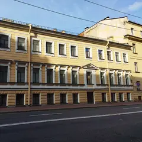
Шпалерная ул., 26
Новое
Интерактивный музей, где гиды общаются жестами, а гости — без слов; есть формат «свидания в тишине» с мастер-классом.
Подробнее и маршрут: В тишинеПозвать сюда: В тишине
Фото здания: Vityavo, CC BY-SA 4.0 · Wikimedia Commons
наб. Лейтенанта Шмидта, 23
Новое
Ледокол 1916 года у набережной: капитанская рубка, машинное отделение и арктическая история.
Подробнее и маршрут: Ледокол «Красин»Позвать сюда: Ледокол «Красин»
Фото: Andrey Korchagin, CC BY-SA 2.0 · Wikimedia Commons
ул. Профессора Попова, 10
Новое
Деревянный дом среди каменной Петроградки, где в 1912 году Матюшин устроил штаб авангарда; мемориальные комнаты с работами его круга и Елены Гуро.
Подробнее и маршрут: Музей петербургского авангарда (Дом Матюшина)Позвать сюда: Музей петербургского авангарда (Дом Матюшина)
Фото: MaryannaNesina, CC BY 3.0 · Wikimedia Commons
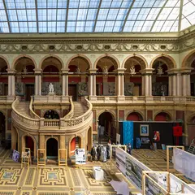
Соляной пер., 15
Новое
Музей прикладного искусства со стеклянным куполом Большого зала — одно из самых красивых пространств.
Подробнее и маршрут: Музей ШтиглицаПозвать сюда: Музей Штиглица
Фото: Lion10~commonswiki, CC BY-SA 4.0 · Wikimedia Commons
наб. канала Грибоедова, 2Б
Новое
Храм-музей, полностью покрытый мозаикой изнутри, — одна из самых ярких точек центра.
Подробнее и маршрут: Спас на КровиПозвать сюда: Спас на Крови
Фото: Рустам Абдрахимов, CC BY 3.0 · Wikimedia Commons
Цветочная ул., 16Л
Новое
Огромный макет страны с движущимися поездами и машинами, где по кругу сменяются день и ночь.
Подробнее и маршрут: Гранд Макет РоссияПозвать сюда: Гранд Макет Россия
Фото: Grandmaket, CC BY-SA 3.0 · Wikimedia Commons
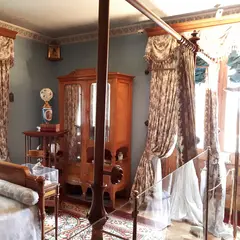
Петергоф, парк Александрия, 7
Новое
Небольшой неоготический дворец Николая I в парке Александрия: семейные интерьеры, террасы и окна на залив. Камерная альтернатива парадному Петергофу.
Подробнее и маршрут: Дворец КоттеджПозвать сюда: Дворец Коттедж
Фото: GAlexandrova, CC BY-SA 4.0 · Wikimedia Commons
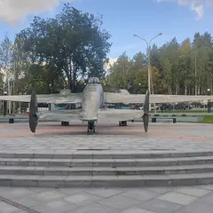
Всеволожск, Колтушское ш., 40
Новое
Музей о лётчиках, защищавших Ленинград, в здании XVIII века: кабина самолёта, макеты техники и мультимедийные реконструкции воздушных боёв.
Подробнее и маршрут: Дом авиаторовПозвать сюда: Дом авиаторов
Фото: Reda Kerbouche, CC BY-SA 4.0 · Wikimedia Commons
Биржевая площадь, 2
Новое
Скелеты китов, мамонтёнок и тысячи чучел зверей: удивительно интересно в любом возрасте.
Подробнее и маршрут: Зоологический музейПозвать сюда: Зоологический музей
Фото: Dezidor, CC BY 3.0 · Wikimedia Commons
наб. канала Грибоедова, 2
Новое
Русский XX век: Малевич, Петров-Водкин, Кандинский и крупные временные проекты в отдельном здании.
Подробнее и маршрут: Корпус Бенуа Русского музеяПозвать сюда: Корпус Бенуа Русского музея
Фото: Никонико962, CC BY-SA 4.0 · Wikimedia Commons
Университетская наб., 3
Новое
Первый музей России: заспиртованные диковины Петра I и этнография со всех континентов.
Подробнее и маршрут: КунсткамераПозвать сюда: Кунсткамера
Фото: Никонико962, CC BY-SA 4.0 · Wikimedia Commons
Кузнечный пер., 5
Новое
Последняя квартира писателя, где написаны «Братья Карамазовы», а рядом Кузнечный рынок и Владимирская.
Подробнее и маршрут: Литературно-мемориальный музей ДостоевскогоПозвать сюда: Литературно-мемориальный музей Достоевского
Фото: Александровы АГ, CC BY-SA 4.0 · Wikimedia Commons
Исаакиевская площадь, 1
Новое
Огромный зал у Исаакия с самыми громкими выставками сезона: от классики до медиаискусства.
Подробнее и маршрут: МанежПозвать сюда: Манеж
Фото: SERGiK73, CC BY-SA 3.0 · Wikimedia Commons
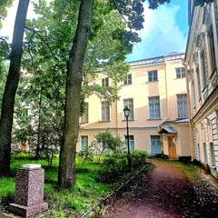
Литейный пр., 53В
Новое
Квартира поэта во флигеле Шереметевского дворца, тихий сад и вечера поэзии в атмосфере эпохи.
Подробнее и маршрут: Музей Анны Ахматовой в Фонтанном домеПозвать сюда: Музей Анны Ахматовой в Фонтанном доме
Фото: MilanSPb, CC BY-SA 4.0 · Wikimedia Commons
ул. Марата, 24А
Новое
Полярный музей в бывшей церкви: дрейфующие станции, ледоколы и экспедиции — необычно и атмосферно.
Подробнее и маршрут: Музей Арктики и АнтарктикиПозвать сюда: Музей Арктики и Антарктики
Фото: Виктор Лимаренко, CC BY-SA 4.0 · Wikimedia Commons
Библиотечный пер., 4к2
Новое
Огромный ангар у Балтийского вокзала с паровозами, вагонами и тепловозами, в которые можно зайти.
Подробнее и маршрут: Музей железных дорог РоссииПозвать сюда: Музей железных дорог России
Фото: Анастасия Юрьевна Львова, CC BY-SA 4.0 · Wikimedia Commons
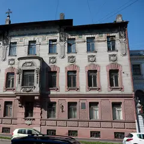
Большая Морская ул., 47
Новое
Родовой особняк писателя на Большой Морской: коллекция бабочек, семейная история и небольшие выставки.
Подробнее и маршрут: Музей НабоковаПозвать сюда: Музей Набокова
Фото: Vadim Zhivotovsky, CC BY 3.0 · Wikimedia Commons
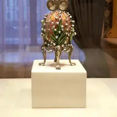
наб. реки Фонтанки, 21
Новое
Императорские пасхальные яйца и ювелирка в Шуваловском дворце — красиво, нарядно и не слишком долго.
Подробнее и маршрут: Музей ФабержеПозвать сюда: Музей Фаберже
Фото: GAlexandrova, CC BY-SA 4.0 · Wikimedia Commons
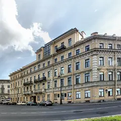
наб. Макарова, 10
Новое
Квартира художника с видом на Неву, выход на крышу мастерской и работы мастера и его учеников.
Подробнее и маршрут: Музей-квартира КуинджиПозвать сюда: Музей-квартира Куинджи
Фото: Andris Malygin, CC BY 3.0 · Wikimedia Commons
наб. реки Мойки, 12
Новое
Последняя квартира поэта у Конюшенной: кабинет, библиотека и история последней дуэли.
Подробнее и маршрут: Музей-квартира ПушкинаПозвать сюда: Музей-квартира Пушкина
Фото: Alexander Ardatov, CC BY 3.0 · Wikimedia Commons
29-я линия В.О., 2
Новое
Несколько этажей современного российского искусства, сменные выставки и ресторан — легко провести весь вечер.
Подробнее и маршрут: ЭрартаПозвать сюда: Эрарта
Фото: Erarta, CC BY 3.0 · Wikimedia Commons
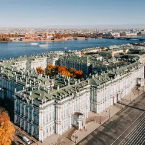
Дворцовая площадь, 2
Новое
Парадные залы Зимнего дворца, Рембрандт и Леонардо: можно ходить годами и каждый раз находить новый зал.
Подробнее и маршрут: Эрмитаж — Зимний дворецПозвать сюда: Эрмитаж — Зимний дворец
Фото: Ivan Smelov, CC BY-SA 4.0 · Wikimedia Commons
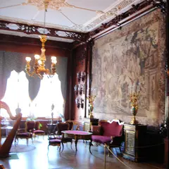
наб. реки Мойки, 94
Новое
Дворец князей Юсуповых с домашним театром и историей убийства Распутина в подвальных комнатах.
Подробнее и маршрут: Юсуповский дворецПозвать сюда: Юсуповский дворец
Фото: Jim Gateley, CC BY 3.0 · Wikimedia Commons
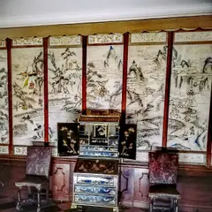
Университетская наб., 15
Новое
Первый каменный дворец города с изразцовыми комнатами эпохи Петра на Университетской набережной.
Подробнее и маршрут: Дворец МеншиковаПозвать сюда: Дворец Меншикова
Фото: Александровы АГ, CC BY-SA 4.0 · Wikimedia Commons
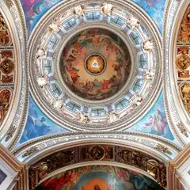
Исаакиевская площадь, 4
Новое
Огромный собор с мозаиками и малахитом; подъём на колоннаду дарит один из лучших видов на центр.
Подробнее и маршрут: Исаакиевский соборПозвать сюда: Исаакиевский собор
Фото: Antonoff.photo, CC BY-SA 4.0 · Wikimedia Commons
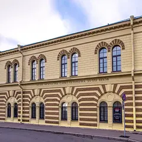
наб. канала Грибоедова, 103
Новое
Музей петербургского искусства прошлого века и наших дней с регулярно обновляемыми выставками.
Подробнее и маршрут: МИСП — Музей искусства Санкт-Петербурга XX–XXI вековПозвать сюда: МИСП — Музей искусства Санкт-Петербурга XX–XXI веков
Фото: Александр Сухарников, CC BY-SA 4.0 · Wikimedia Commons
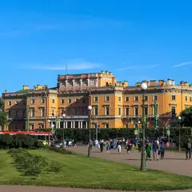
Садовая ул., 2
Новое
Красный замок Павла I с мрачной историей, парадными покоями и выставками Русского музея.
Подробнее и маршрут: Михайловский (Инженерный) замокПозвать сюда: Михайловский (Инженерный) замок
Фото: Никонико962, CC BY-SA 4.0 · Wikimedia Commons
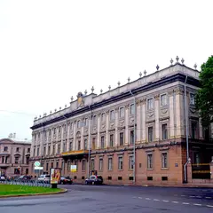
Миллионная ул., 5
Новое
Дворец, облицованный камнем, где Русский музей показывает выставки о театре, портрете и современном искусстве.
Подробнее и маршрут: Мраморный дворецПозвать сюда: Мраморный дворец
Фото: A.Savin, CC BY-SA 3.0 · Wikimedia Commons
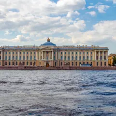
Университетская наб., 17
Новое
Слепки античных скульптур, модели соборов и работы выпускников в здании у сфинксов.
Подробнее и маршрут: Музей Академии художествПозвать сюда: Музей Академии художеств
Фото: Никонико962, CC BY-SA 4.0 · Wikimedia Commons
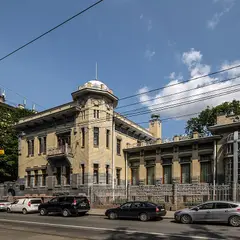
ул. Куйбышева, 2-4
Новое
Особняк Кшесинской в стиле модерн: интерьеры балерины и выставки о XX веке.
Подробнее и маршрут: Музей политической истории РоссииПозвать сюда: Музей политической истории России
Фото: Florstein, CC BY-SA 4.0 · Wikimedia Commons
Инженерная ул., 2-4Д
Новое
Главное собрание русского искусства: от икон и Брюллова до Репина и «Последнего дня Помпеи».
Подробнее и маршрут: Русский музей — Михайловский дворецПозвать сюда: Русский музей — Михайловский дворец
Фото: Артём Светлов, CC BY 4.0 · Wikimedia Commons
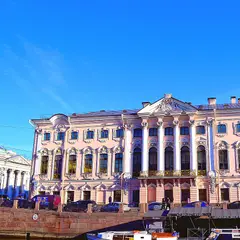
Невский пр., 17
Новое
Барочный дворец Растрелли прямо на Невском: восстановленные интерьеры и камерные экспозиции.
Подробнее и маршрут: Строгановский дворецПозвать сюда: Строгановский дворец
Фото: GAlexandrova, CC BY-SA 4.0 · Wikimedia Commons
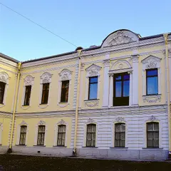
наб. реки Фонтанки, 34
Новое
Дворец на Фонтанке с коллекцией инструментов и концертами в старинных залах.
Подробнее и маршрут: Шереметевский дворец — Музей музыкиПозвать сюда: Шереметевский дворец — Музей музыки
Фото: GAlexandrova, CC BY-SA 4.0 · Wikimedia Commons
Конюшенная пл., 2Ж
Новое
Американские автомобили 1940–1970-х в декорациях из кино: за руль можно садиться, детали трогать, фотографироваться. Весело и вдвоём, и компанией.
Подробнее и маршрут: Museum Route 66Позвать сюда: Museum Route 66
Средний пр. В.О., 74
Новое
Музей минералов и окаменелостей, где теперь показывают настоящие яйца динозавров из Гоби и предлагают самим разгадать, чьи они.
Подробнее и маршрут: Геологоразведочный музейПозвать сюда: Геологоразведочный музей
7-я линия В.О., 16–18
Новое
Торговый зал старинной аптеки с деревянными шкафами, склянками и обстановкой начала XX века; здесь же бывают камерные концерты. Приходить утром в будни.
Подробнее и маршрут: Музей «Аптека доктора Пеля»Позвать сюда: Музей «Аптека доктора Пеля»
Кронштадт, форт Константин
Новое
Новый музей подводных находок в кронштадтском форте: вещи с затонувших судов XVIII–XX веков и рассказ о том, как их поднимают. Хороший повод для поездки вдвоём.
Подробнее и маршрут: Музей археологии заливаПозвать сюда: Музей археологии залива
ул. Короленко, 14
Новое
Квартира поэта в доме Мурузи; вход через книжный и кофейню, есть лекции и вечера чтений.
Подробнее и маршрут: Музей Бродского «Полторы комнаты»Позвать сюда: Музей Бродского «Полторы комнаты»


Готовые планы с этими местами 12 из 54
- Музей петербургского авангарда (Дом Матюшина) · Дом-музей · м. Петроградская
- 9 минут пешкомМечта · Кофейня
Сначала маленький деревянный дом-музей, потом семь минут пешком до кофейни с осенними напитками. Камерно и без спешки.
Открыть план: Авангард и сезонный кофеПозвать сюда: Авангард и сезонный кофе
Фото: MaryannaNesina, CC BY 3.0 · Wikimedia Commons
- Парк Александрия · Парк · ж/д Новый Петергоф
- 8 минут пешкомДворец Коттедж · Музей
Сначала идёте по аллеям парка к заливу, потом заходите в маленький дворец в шести минутах. Тихо, без толп парадного Петергофа.
Открыть план: Александрия и дворец у заливаПозвать сюда: Александрия и дворец у залива
Фото: Egregiu, CC BY-SA 4.0 · Wikimedia Commons
- Museum Route 66 · Музей · м. Невский проспект
- 3 минуты пешкомСпас на Крови · Музей
- 9 минут пешкомЧАО Какао · Какаочная
Фотографируетесь в декорациях старого кино, проходите мимо Спаса на Крови и греетесь какао в пяти минутах. Лёгкий план, где есть чем заняться и о чём говорить.
Открыть план: Америка 60-х и какаоПозвать сюда: Америка 60-х и какао
Фото: Рустам Абдрахимов, CC BY 3.0 · Wikimedia Commons
- Музей «Аптека доктора Пеля» · Историческая аптека-музей · м. Василеостровская
- 24 минуты пешкомСтанция метро «Горный институт» · Новая станция метро
Склянки и шкафы старой аптеки на 7-й линии, потом новая станция «Горный институт» со светильниками-кристаллами.
Открыть план: Аптека Пеля и станция-кристаллПозвать сюда: Аптека Пеля и станция-кристалл
Фото: Florstein, CC BY-SA 4.0 · Wikimedia Commons
- Музей Арктики и Антарктики · Музей · м. Владимирская
- 5 минут пешкомБа · Ресторан русской кухни
- 1 минута пешкомRing o'Bells · Паб
Полярные экспедиции в музее, потом сытные щи в пяти минутах и пинта в пабе буквально через дорогу.
Открыть план: Арктика, щи и пабПозвать сюда: Арктика, щи и паб
Фото: Виктор Лимаренко, CC BY-SA 4.0 · Wikimedia Commons
- Путь · Галерея · м. Сенная площадь
- 7 минут пешкомДом Флоу · Кофейня в особняке модерн
Днём проходите личные задания в галерее, затем пять минут пешком до кофейни в особняке модерн: спокойное место, чтобы обсудить, кому что откликнулось.
Открыть план: Выставка о себе и кофе в особнякеПозвать сюда: Выставка о себе и кофе в особняке
Фото здания: Артём Светлов, CC BY-SA 4.0 · Wikimedia Commons
- Музей Довлатова · Музей · м. Достоевская
- 7 минут пешкомМандрагора · Кафе
Камерный музей в коммуналке писателя и пять минут пешком до кафе, где к коктейлю гадают по руке и на кофейной гуще — будет что сравнить.
Открыть план: Довлатов, а потом тароПозвать сюда: Довлатов, а потом таро
Фото: Kommunalka1912, CC BY-SA 4.0 · Wikimedia Commons
- Музей Довлатова · Музей · м. Достоевская
- 7 минут пешкомБа · Ресторан русской кухни
- 1 минута пешкомEl Copitas · Коктейльный бар
Короткий музей Довлатова, ужин в щичной в пяти минутах ходьбы и коктейль в соседнем баре напоследок.
Открыть план: Довлатов, щи и коктейльПозвать сюда: Довлатов, щи и коктейль
Фото: Kommunalka1912, CC BY-SA 4.0 · Wikimedia Commons
- Литературно-мемориальный музей Достоевского · Музей · м. Владимирская
- 3 минуты пешкомБа · Ресторан русской кухни
Квартира Достоевского в двух минутах от щичной: после музея — горячие щи и соленья, очень петербургский осенний вечер.
Открыть план: Достоевский и тарелка щейПозвать сюда: Достоевский и тарелка щей
Фото: Александровы АГ, CC BY-SA 4.0 · Wikimedia Commons
- Ледокол «Красин» · Музей-корабль · м. Горный институт
- 13 минут пешкомМонастырские пышки · Пышечная
Осмотреть ледокол «Красин» у набережной, а через десять минут вдоль Невы согреться пышками и кофе.
Открыть план: Ледокол и пышкиПозвать сюда: Ледокол и пышки
Фото: Andrey Korchagin, CC BY-SA 2.0 · Wikimedia Commons
- Дом Лидваля · Доходный дом, северный модерн · м. Горьковская
- 19 минут пешкомДом с башнями · Доходный дом-«замок»
- 10 минут пешкомМузей петербургского авангарда (Дом Матюшина) · Дом-музей
Совы и пауки дома Лидваля, замок с башнями на площади Толстого и деревянный дом Матюшина среди камня.
Открыть план: Модерн ПетроградкиПозвать сюда: Модерн Петроградки
Фото: Wolfgang Moroder, CC BY-SA 3.0 · Wikimedia Commons
- Музей Штиглица · Музей · м. Чернышевская
- 3 минуты пешкомCasimir · Кофейня
Роскошные залы музея Штиглица, а через две минуты — уютная кофейня с осенним меню, чтобы согреться супом или оладьями.
Открыть план: Музей Штиглица и тыквенный супПозвать сюда: Музей Штиглица и тыквенный суп
Фото: Lion10~commonswiki, CC BY-SA 4.0 · Wikimedia Commons


Выставки сейчас 12 из 17
Лахта Центр · м. Беговая · бесплатно
Восемь световых и звуковых скульптур, которые отзываются на касание и ветер и превращают научные данные в музыку. Вход без билета.
Подробнее: Третья природаПозвать сюда: Третья природаБилеты : Третья природа (страница с билетами, откроется в новой вкладке)
Фото: TomPlay148, CC BY-SA 3.0 · Wikimedia Commons
Корпус Бенуа Русского музея · м. Невский проспект · от 800 ₽
Большая юбилейная выставка Айвазовского, включая самые известные морские полотна; красивый маршрут для свидания.
Подробнее: АйвазовскийПозвать сюда: АйвазовскийБилеты : Айвазовский (страница с билетами, откроется в новой вкладке)
Фото: Никонико962, CC BY-SA 4.0 · Wikimedia Commons
Корпус Бенуа Русского музея · м. Невский проспект · от 800 ₽
Крупная ретроспектива мариниста: около двухсот работ, отреставрированный «Девятый вал», модели кораблей и мультимедийный зал. Спокойный повод для свидания.
Подробнее: АйвазовскийПозвать сюда: АйвазовскийБилеты : Айвазовский (страница с билетами, откроется в новой вкладке)
Фото: Никонико962, CC BY-SA 4.0 · Wikimedia Commons
Музей «Эрарта» · м. Горный институт · 1 500–2 950 ₽
Итальянский фэшн-фотограф, четверть века работавший с Vogue Italia: портреты звёзд, моделей и дизайнеров эпохи большой моды. Легко и красиво смотреть с подругами.
Подробнее: Бардо Фабиани. Память о прекрасном прошломПозвать сюда: Бардо Фабиани. Память о прекрасном прошломБилеты : Бардо Фабиани. Память о прекрасном прошлом (страница с билетами, откроется в новой вкладке)
Фото: Erarta, CC BY 3.0 · Wikimedia Commons
Музей ОБЭРИУ · м. Горьковская · от 950 ₽
Новая экспозиция в бывшей квартире Введенского о женщинах круга обэриутов: художницах, музах и хранительницах архивов.
Подробнее: Дочь дочери дочерей дочериПозвать сюда: Дочь дочери дочерей дочериБилеты : Дочь дочери дочерей дочери (страница с билетами, откроется в новой вкладке)
Музей ОБЭРИУ · м. Горьковская · от 950 ₽
Выставка о художницах и хранительницах наследия обэриутов — Алисе Порет, Вере Ермолаевой, Татьяне Глебовой: живопись, графика, письма и архив.
Подробнее: Женщины круга ОБЭРИУ. «Дочь дочери дочерей дочери»Позвать сюда: Женщины круга ОБЭРИУ. «Дочь дочери дочерей дочери»Билеты : Женщины круга ОБЭРИУ. «Дочь дочери дочерей дочери» (страница с билетами, откроется в новой вкладке)
Эрмитаж, Главный музейный комплекс · м. Адмиралтейская
Шёлковые придворные халаты, портреты цинских полководцев и воссозданный кабинет китайского учёного в Гербовом зале. Выставка работает до 22 ноября — успейте.
Подробнее: Императорский Китай. Династия Цин (1644–1911)Позвать сюда: Императорский Китай. Династия Цин (1644–1911)Билеты : Императорский Китай. Династия Цин (1644–1911) (страница с билетами, откроется в новой вкладке)
Фото: Teddy fox78, CC BY-SA 3.0 · Wikimedia Commons
Эрмитаж, Главный музейный комплекс · м. Адмиралтейская
Эскизы, по которым швейцарские мастера собирали цветные окна для ратуш и домов. Тонкая графика в небольшой галерее — приятная пауза после парадных залов.
Подробнее: Линии света. Швейцарские рисунки для витражей XVI–XVII вековПозвать сюда: Линии света. Швейцарские рисунки для витражей XVI–XVII вековБилеты : Линии света. Швейцарские рисунки для витражей XVI–XVII веков (страница с билетами, откроется в новой вкладке)
Фото: Teddy fox78, CC BY-SA 3.0 · Wikimedia Commons
Цифергауз · м. Горный институт · бесплатно · 16+
Бесплатная выставка о связях природы, человека и технологий: художники исследуют, как камера, алгоритмы и память складывают картину мира. Тихий формат для свидания.
Подробнее: Пока собирается мирПозвать сюда: Пока собирается мирБилеты : Пока собирается мир (страница с билетами, откроется в новой вкладке)
РОСФОТО · м. Адмиралтейская · 0+
Нижний Новгород 1896-го на старинных снимках: павильоны большой Всероссийской выставки, электрическая дорога и воздухоплавательный парк. Тихий музей рядом с Исаакием.
Подробнее: Россия 1896. К юбилею Нижегородской промышленной и художественной выставкиПозвать сюда: Россия 1896. К юбилею Нижегородской промышленной и художественной выставкиБилеты : Россия 1896. К юбилею Нижегородской промышленной и художественной выставки (страница с билетами, откроется в новой вкладке)
Эрмитаж, Главный штаб · м. Адмиралтейская
Полузабытый художник, проживший жизнь между Россией и Францией: картины из частного фонда в залах Главного штаба. Удобно совместить с импрессионистами в том же здании.
Подробнее: Русский парижанин Константин КузнецовПозвать сюда: Русский парижанин Константин КузнецовБилеты : Русский парижанин Константин Кузнецов (страница с билетами, откроется в новой вкладке)
Фото: Max A. Khlopov, CC BY-SA 3.0 · Wikimedia Commons
Манеж · м. Адмиралтейская · 100–800 ₽ · 12+
Тысяча с лишним экспонатов из 98 собраний страны: шаляпинский наряд царя Бориса, кусок занавеса Боровского с таганковского «Гамлета» и головинский занавес «Маскарада».
Подробнее: Сцена действияПозвать сюда: Сцена действияБилеты : Сцена действия (страница с билетами, откроется в новой вкладке)
Фото: SERGiK73, CC BY-SA 3.0 · Wikimedia Commons


Как позвать
- Выбери план, место или событие — в карточке адрес, цены и маршрут в Яндекс Картах.
- Нажми «Позвать сюда» — соберётся приглашение-игра для свидания или голосование для компании.
- Отправь ссылку в любой мессенджер: тебе ответят, а компания отметит, куда и когда может. Бесплатно и без регистрации.